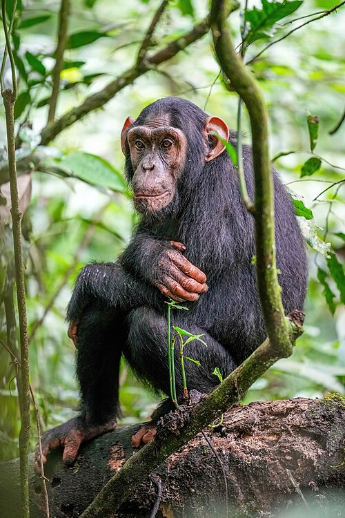
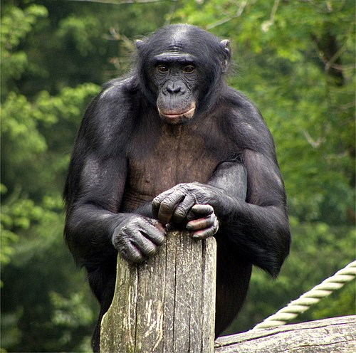
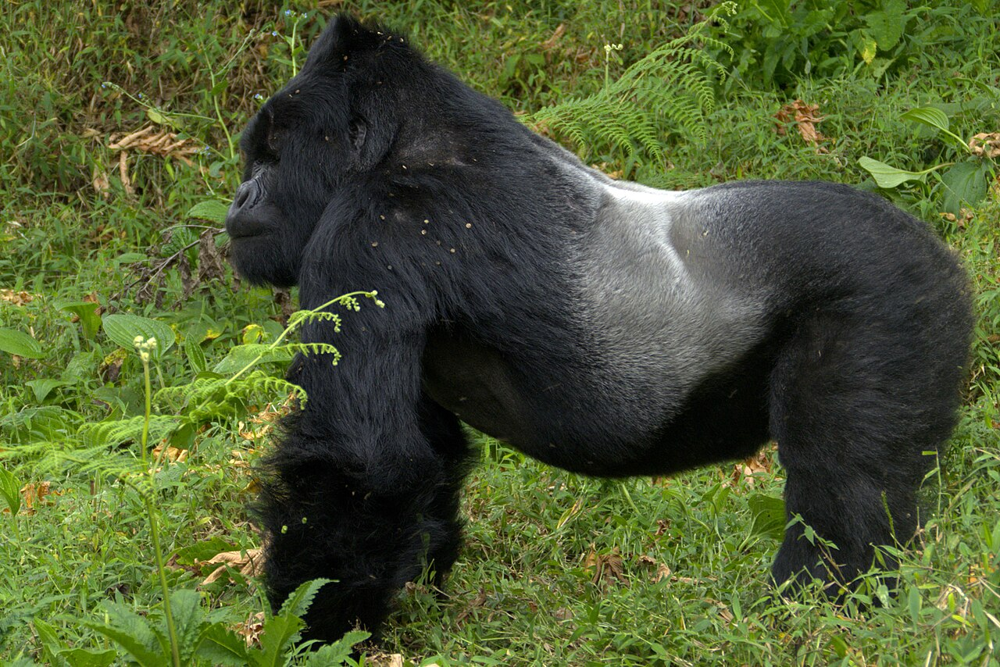

Chimpanzee (Pan troglodytes)
Chimpanzees are our closest living relatives, sharing about 98.7% of human DNA. They live in tropical forests and savannas of central and western Africa.
- Habitat: Rainforests and woodland savannas
- Diet: Omnivorous — fruits, leaves, insects, and small animals
- Behavior: Known for tool use, cooperation, and complex communication
- Conservation status: Endangered (IUCN)

Bonobo (Pan paniscus)
Bonobos, sometimes called “pygmy chimpanzees,” are known for their peaceful, matriarchal societies and sexual behaviors that promote social bonding.
- Habitat: Rainforests of the Democratic Republic of the Congo
- Diet: Primarily frugivorous (fruit-eating), but also eat leaves and small animals
- Behavior: Highly social, emphasizing cooperation and conflict resolution
- Conservation status: Endangered (IUCN)

Gorilla (Gorilla gorilla)
Gorillas are the largest primates, living in family groups led by a dominant silverback male. They are gentle giants with remarkable strength and intelligence.
- Habitat: Tropical forests of central Africa
- Diet: Herbivorous — mostly leaves, stems, and fruits
- Behavior: Social, living in troops of 5–30 individuals
- Conservation status: Critically Endangered (IUCN)

Orangutan (Pongo pygmaeus)
Orangutans are the only great apes found in Asia and are known for their reddish-brown fur and high intelligence. They spend most of their lives in trees.
- Habitat: Rainforests of Borneo and Sumatra
- Diet: Primarily fruit, along with leaves, bark, and insects
- Behavior: Mostly solitary; expert nest-builders and tool users
- Conservation status: Critically Endangered (IUCN)